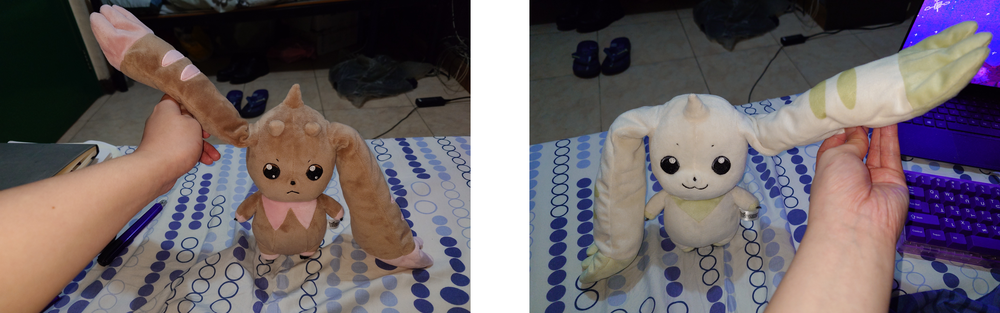
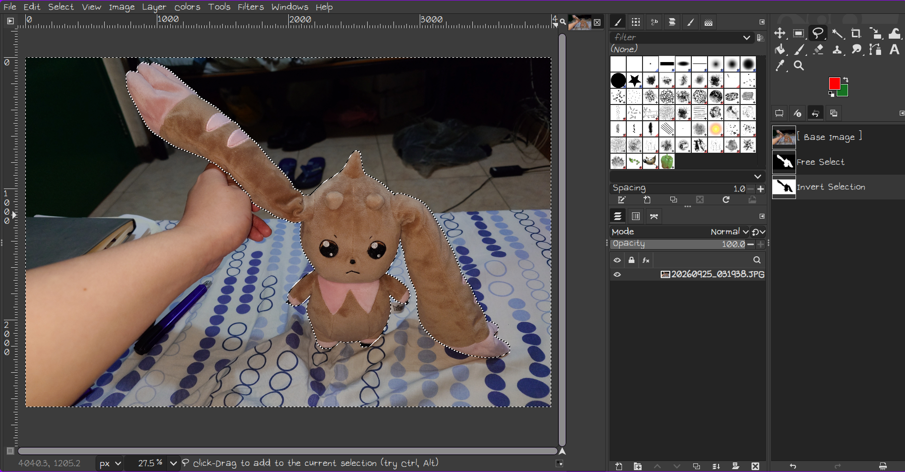
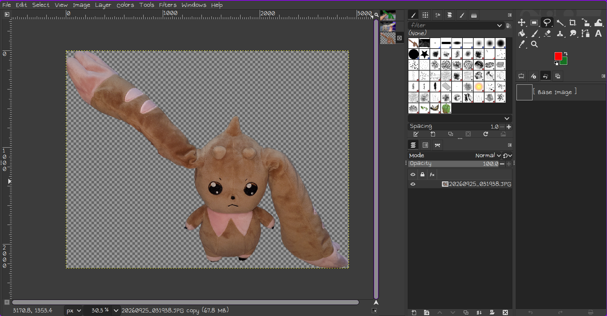
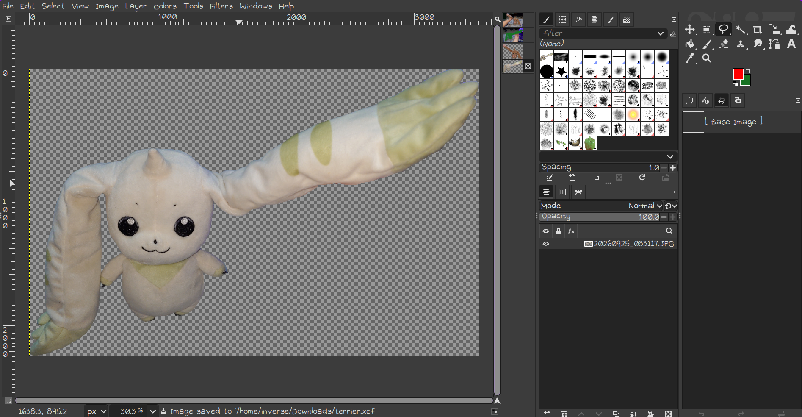
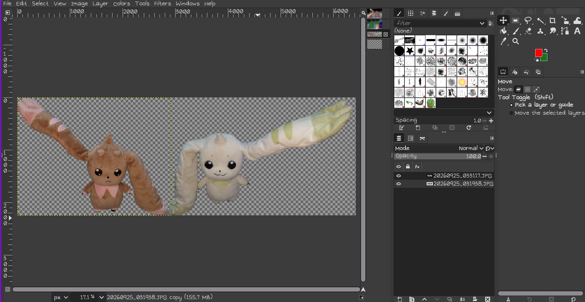
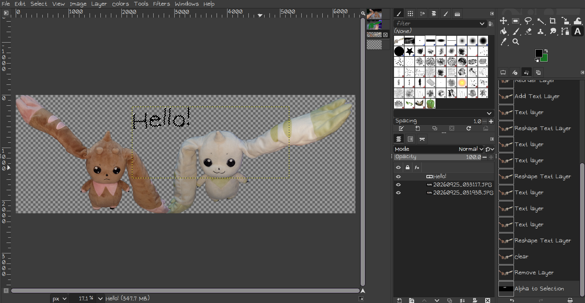
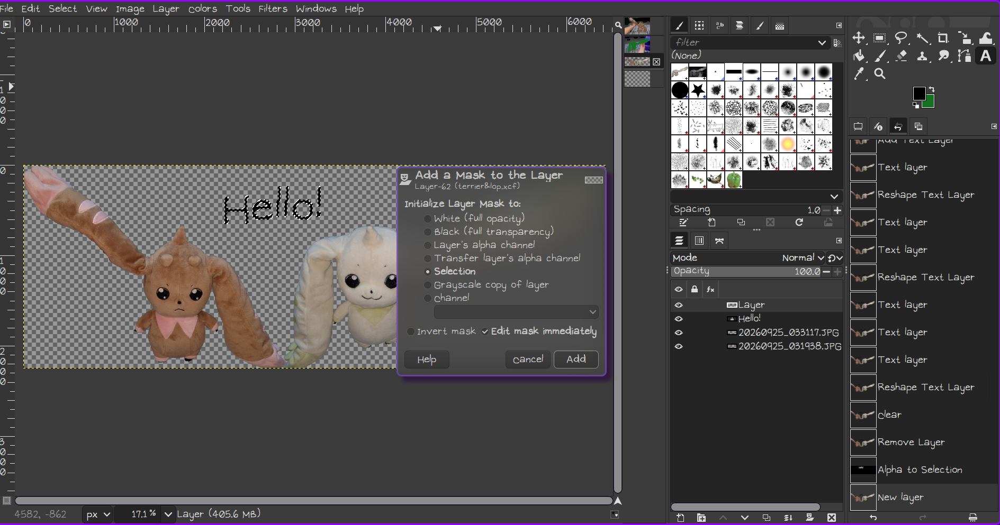
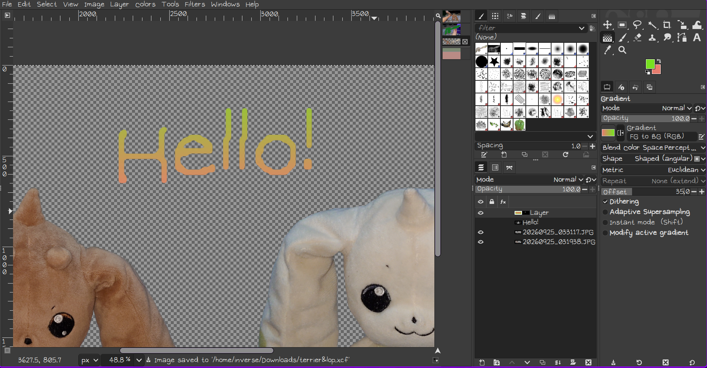
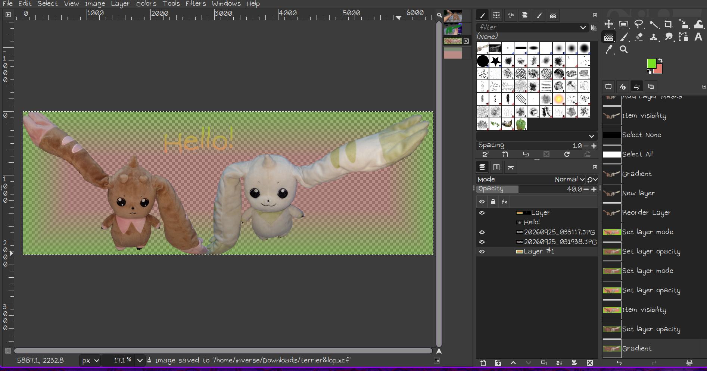

Welcome to my first blog post! In this post, I’ll show you how I made my blog’s banner.

Photos of My Plushies (taken by me)
They’re my plushies that I hold dear, and what I used to create my banner. I’ve owned the left plushie for 5 years and the right plushie for 6 years now. Few years ago, I was suffering from severe depression. I was stuck in my bed for most of my days, there were no one I could talk to, and I felt like there was no hope for me. During this difficult time, I often tried to relieve myself by hugging my plushies. They made me feel like I wasn’t alone, and my life matters to someone. I eventually got a lot better from my depression, and I don’t think I could have done that without them.
Now, it’s time to show the steps for how I edited these images. I used an app called
GIMP to do my editing. It’s a free and open source graphics editor available on various operating systems.

The first step is to select the plushie with the free selection tool.

The next step is to cut out the plushie and paste it into a new layer.

We repeat the same steps to cut out the other plushie.

Now, increase the canvas size of one of the layer and paste the other plushie into a new layer to make it look like they are together, waving at you with their ear.

Next, add a text layer that says “Hello!” and apply “Alpha to Selection” to the text layer.

Once you have done that, add a new layer and add a selection mask to the new layer.

Next, hide the text layer and fill the new layer with gradient color based on the plushies.

Finally, add another layer and move it to the bottom. We fill the layer with the same gradient color as before. Remember to reduce the opacity of the layer. This will be our background.

Result!
Now that you know how I made my banner, it’s time to make one by yourself! A banner can help you show your own personalty. You can use it on your own blog or social media. I hope you learn something out of this blog post.